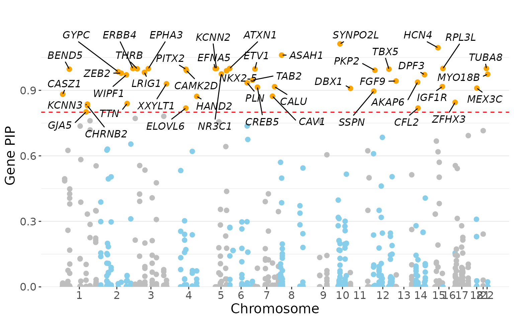

Gene mapping tutorial
Kaixuan Luo
gene_mapping_tutorial.RmdAbout our gene mapping procedure
Despite our fine mapping efforts, there remains considerable uncertainty of causal variants in most loci. Even if the causal variants are known, assigning target genes can be difficult due to complex, often long-range, regulatory relationships between enhancers and genes.
We developed a novel gene mapping procedure to prioritize target genes:
For every putative causal SNP, we assign a weight to each nearby gene, taking into account multiple ways a SNP may affect a gene. The weight of a nearby gene can be viewed as the probability that this SNP targets that gene.
The PIP of each SNP is then distributed among all potential target genes according to the weights of these genes. The “fractional PIP” a gene receives from a SNP can be viewed as the support the SNP provides to that gene.
For each gene, we then sum over the fractional PIPs it receives from all candidate SNPs in the region. The resulting “gene PIP” approximates the probability of a gene being causal (Methods).
Similar to variant-level fine mapping, we also define a “gene credible set”, the set of genes that capture the causal signal at a locus with high probability (80% in our study)

Schematic of gene-level PIP calculation. s: SNP, g: gene
Gene mapping tutorial
Our gene mapping procedure takes variant-level PIPs from genetic fine mapping (probability for a SNP being causal), together with functional annotation data, and computes gene-level PIPs (probability for a gene being causal).
Required input data:
- Genetic fine mapping result
- Gene annotations (exons, introns, UTRs, etc.)
- Functional annotation data, including: pcHiC links, ABC scores, open chromatin regions (OCRs), enhancer regions (histone ChIP-seq peaks), etc.
Load R packages
suppressMessages(library(data.table))
suppressMessages(library(tidyverse))
suppressMessages(library(GenomicRanges))
library(Mapgen)Load fine-mapping results:
finemap <- readRDS("../inst/extdata/aFib_Finemapped.tble.rds")
finemap.gr <- process_finemapping_sumstat(finemap, snp = 'snp', chr = 'chr',
pos = 'pos', pip = 'susie_pip',
pval = 'pval', zscore = 'zscore',
cs = 'CS', locus = 'locus',
cols.to.keep = c('snp','chr','pos', 'a0', 'a1', 'pip', 'pval', 'zscore', 'cs', 'locus'),
pip.thresh = 1e-5, filterCS = FALSE)## Process fine mapping summary statistics ...
## Filter SNPs with PIP threshold of 1e-05
head(finemap.gr)## GRanges object with 6 ranges and 10 metadata columns:
## seqnames ranges strand | snp chr pos a0
## <Rle> <IRanges> <Rle> | <character> <integer> <integer> <character>
## [1] chr9 139082621 * | rs4842129 9 139082621 A
## [2] chr9 139085865 * | rs11103373 9 139085865 C
## [3] chr9 139089679 * | rs7860634 9 139089679 G
## [4] chr9 139089717 * | rs7850466 9 139089717 T
## [5] chr9 139089718 * | rs7847312 9 139089718 A
## [6] chr9 139091460 * | rs2274114 9 139091460 A
## a1 pip pval zscore cs locus
## <character> <numeric> <numeric> <numeric> <numeric> <numeric>
## [1] G 3.00183e-05 5.14929 4.46914 0 1009
## [2] T 1.59627e-05 4.78489 4.32857 0 1009
## [3] A 1.94283e-03 6.99568 5.33333 0 1009
## [4] G 1.42424e-03 6.94808 5.27143 0 1009
## [5] C 1.32523e-03 6.91045 5.25714 0 1009
## [6] G 6.54232e-05 5.46750 -4.65909 0 1009
## -------
## seqinfo: 20 sequences from an unspecified genome; no seqlengthsLoad genomic annotations (prepared earlier for hg19).
genomic.annots <- readRDS('../inst/extdata/genomic.annots.hg19.gr.rds')Gene information:
gene.annots <- genomic.annots$genesWe already included Promoter-capture HiC (PCHi-C) data from iPSC derived cardiomyocytes (CMs) in the ‘genomic.annots.hg19.gr.rds’ file.
head(genomic.annots$pcHiC, 3)## GRanges object with 3 ranges and 5 metadata columns:
## seqnames ranges strand | promoter_chr promoter_start
## <Rle> <IRanges> <Rle> | <character> <numeric>
## [1] chr1 10056320-10057012 * | chr1 10002213
## [2] chr1 10062800-10063261 * | chr1 10002213
## [3] chr1 10085205-10085681 * | chr1 10002213
## promoter_end gene_name score
## <numeric> <character> <numeric>
## [1] 10004089 NMNAT1 6.33
## [2] 10004089 NMNAT1 7.37
## [3] 10004089 NMNAT1 7.28
## -------
## seqinfo: 24 sequences from an unspecified genome; no seqlengthsYou can use your own pcHiC data, or skip this if you do not have relevant PCHi-C data.
# pcHiC.gr <- process_pcHiC(pcHiC)
# pcHiC.gr <- pcHiC.gr[pcHiC.gr$gene_name %in% gene.annots$gene_name,] # restrict to protein coding genes
# genomic.annots$pcHiC <- pcHiC.grAdd ABC scores from heart ventricle (downloaded from Nasser et al. Nature 2021 paper). You may skip this if you do not have relevant ABC scores.
ABC <- data.table::fread('../inst/extdata/heart_ventricle-ENCODE_ABC.tsv.gz')
ABC.gr <- process_ABC(ABC, ABC.thresh = 0.015, full.element = TRUE)
ABC.gr <- ABC.gr[ABC.gr$gene_name %in% gene.annots$gene_name, ] # restrict to protein coding genes
genomic.annots$ABC <- ABC.gr
head(ABC.gr, 3)## GRanges object with 3 ranges and 23 metadata columns:
## seqnames ranges strand | name element_start
## <Rle> <IRanges> <Rle> | <character> <character>
## [1] chr1 888243-888743 * | genic|chr1:888243-88.. 888243
## [2] chr1 908361-908861 * | genic|chr1:908361-90.. 908361
## [3] chr1 908361-908861 * | genic|chr1:908361-90.. 908361
## element_end class activity_base gene_name TargetGeneTSS
## <character> <character> <numeric> <character> <integer>
## [1] 888743 genic 0.643903 NOC2L 894679
## [2] 908861 genic 2.420474 KLHL17 895966
## [3] 908861 genic 2.420474 PLEKHN1 901876
## TargetGeneExpression TargetGenePromoterActivityQuantile
## <logical> <numeric>
## [1] <NA> 0.506151
## [2] <NA> 0.431726
## [3] <NA> 0.462930
## TargetGeneIsExpressed distance isSelfPromoter hic_contact
## <logical> <numeric> <logical> <numeric>
## [1] TRUE 6186 FALSE 0.071404
## [2] TRUE 12645 FALSE 0.021792
## [3] TRUE 6735 FALSE 0.057115
## powerlaw_contact powerlaw_contact_reference hic_contact_pl_scaled
## <numeric> <numeric> <numeric>
## [1] 0.104071 0.102573 0.070376
## [2] 0.055676 0.055071 0.021556
## [3] 0.096610 0.095260 0.056317
## hic_pseudocount hic_contact_pl_scaled_adj ABC.Score.Numerator ABC.Score
## <numeric> <numeric> <numeric> <numeric>
## [1] 0.001216 0.071592 0.046098 0.015224
## [2] 0.001216 0.022771 0.055118 0.017673
## [3] 0.001216 0.057533 0.139257 0.041100
## powerlaw.Score.Numerator powerlaw.Score CellType
## <numeric> <numeric> <character>
## [1] 0.066047 0.012388 heart_ventricle-ENCODE
## [2] 0.133298 0.024471 heart_ventricle-ENCODE
## [3] 0.230575 0.038288 heart_ventricle-ENCODE
## -------
## seqinfo: 23 sequences from an unspecified genome; no seqlengthsDefine active promoters.
genomic.annots$active.promoters <- IRanges::subsetByOverlaps(genomic.annots$promoters, genomic.annots$OCRs_hg19, minoverlap = 100)Add enhancer data (you may skip this if you do not have relevant enhancer data)
genomic.annots$enhancer_regions <- genomic.annots$OCRs_hg19Run gene mapping
Definition of enhancer loops: “enhancer loops” are defined from Activity-By-Contact (ABC) scores and promoter-capture HiC data. Considering the fact that enhancers close to promoters may actually be missed by PCHi-C and similar assays, because of the difficulty of calling such interactions due to high background level, we also include OCRs that are within 20 kb of active promoter.
Run gene mapping using the following settings:
- enhancer_loop_method = “ABC.pcHiC.nearby20kb” (as explained above)
- intron.mode = FALSE (do not assign intronic SNPs to the genes containing the introns)
- distance weight = 50000 (50kb)
SNP view table
snp.gene.pip.mat <- compute_gene_pip(finemap.gr,
genomic.annots,
enhancer_loop_method = "ABC.pcHiC.nearby20kb",
intron.mode = FALSE,
c.dist = 50000,
dist.to = "tss",
cols.to.keep = c("snp","chr","pos",'a0', 'a1', "locus", "cs", "pip", "gene_name", "category", "weight", "frac_pip", "gene_pip"))## Map SNPs to genes and assign weights ...
## Include ABC scores in enhancer loops ...
## Include pcHiC in enhancer loops ...
## Include enhancers with nearby promoters (20kb) in enhancer loops ...
## Assigning SNPs to genes...
## Assign SNPs in exons and active promoters ...
## Assign SNPs in enhancers to linked genes through enhancer loops ...
## Assign SNPs in enhancer regions to genes by distance weighting ...
## Assign SNPs in introns/UTRs...
## Assign intergenic SNPs to genes by distance weighting ...
## Assign weights to SNP-gene pairs ...
## Compute gene PIP ...
head(snp.gene.pip.mat)## # A tibble: 6 × 13
## # Groups: snp [5]
## snp chr pos a0 a1 locus cs pip gene_name category weight
## <chr> <int> <int> <chr> <chr> <dbl> <dbl> <dbl> <chr> <chr> <dbl>
## 1 rs665… 1 2.23e7 C T 15 0 8.75e-3 HSPG2 ABC,nea… 1
## 2 rs665… 1 2.23e7 C T 15 0 8.75e-3 USP48 ABC 1
## 3 rs213… 1 4.16e7 C T 25 0 5.17e-5 SCMH1 ABC 1
## 4 rs484… 1 1.54e8 G T 77 0 1.15e-5 IL6R ABC 1
## 5 rs668… 1 1.54e8 A G 77 0 1.39e-5 IL6R ABC 1
## 6 rs279… 1 2.06e8 T C 106 0 1.95e-4 SLC45A3 ABC 1
## # … with 2 more variables: frac_pip <dbl>, gene_pip <dbl>Gene view table
gene.pip.res <- extract_gene_level_result(snp.gene.pip.mat, gene.annots)## Extract gene level result ...
head(gene.pip.res)## # A tibble: 6 × 4
## chr pos gene_name gene_pip
## <fct> <int> <chr> <dbl>
## 1 chr1 22263790 HSPG2 0.470
## 2 chr1 22110099 USP48 0.0213
## 3 chr1 41707826 SCMH1 0.0761
## 4 chr1 154377669 IL6R 0.0000330
## 5 chr1 205649587 SLC45A3 0.0472
## 6 chr1 205719404 NUCKS1 0.67880% Gene credible set
gene.cs.df <- gene_cs(snp.gene.pip.mat, by.locus = TRUE, gene.cs.percent.thresh = 0.8)
head(gene.cs.df)## # A tibble: 6 × 6
## locus gene_cs gene_cs_locus_pip top_gene top_locus_gene_… top_gene_pip
## <dbl> <chr> <chr> <chr> <dbl> <dbl>
## 1 7 CASZ1 CASZ1(0.886) CASZ1 0.886 0.886
## 2 15 HSPG2,CEL… HSPG2(0.47),CELA3B(0.… HSPG2 0.470 0.470
## 3 25 SLFNL1,CT… SLFNL1(0.624),CTPS1(0… SLFNL1 0.624 0.624
## 4 31 BEND5 BEND5(0.997) BEND5 0.997 0.997
## 5 32 FAF1,CDKN… FAF1(0.382),CDKN2C(0.… FAF1 0.382 0.403
## 6 33 TTC39A,EP… TTC39A(0.409),EPS15(0… TTC39A 0.409 0.411Find the nearest gene for the top SNP in each locus
nearest_genes.df <- find_nearest_genes(finemap.gr, gene.annots, dist.to = "genebody")
head(nearest_genes.df)## snp chr pos nearest_gene
## 1 rs2200732 4 111710042 PITX2
## 2 rs2106261 16 73051620 ZFHX3
## 3 rs11264280 1 154862952 KCNN3
## 4 rs11598047 10 105342672 NEURL
## 5 rs11773845 7 116191301 CAV1
## 6 rs577676 1 170587340 PRRX1Make a Manhattan plot of the gene PIP, and label genes with gene PIP > 0.8.
gene_manhattan_plot(gene.pip.res, sig.pip = 0.8)